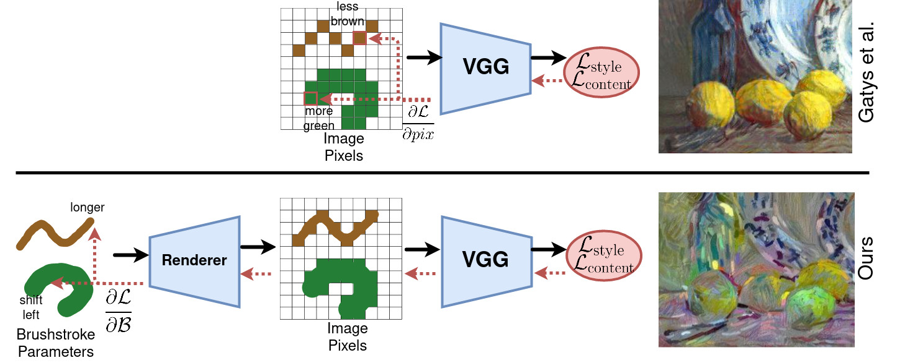
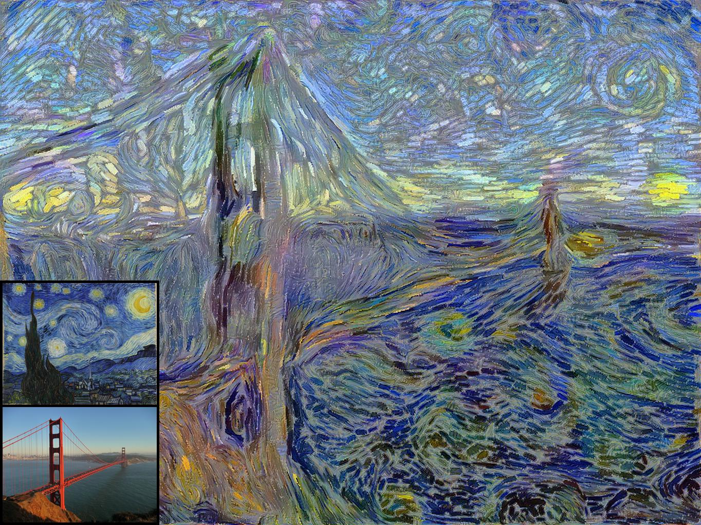
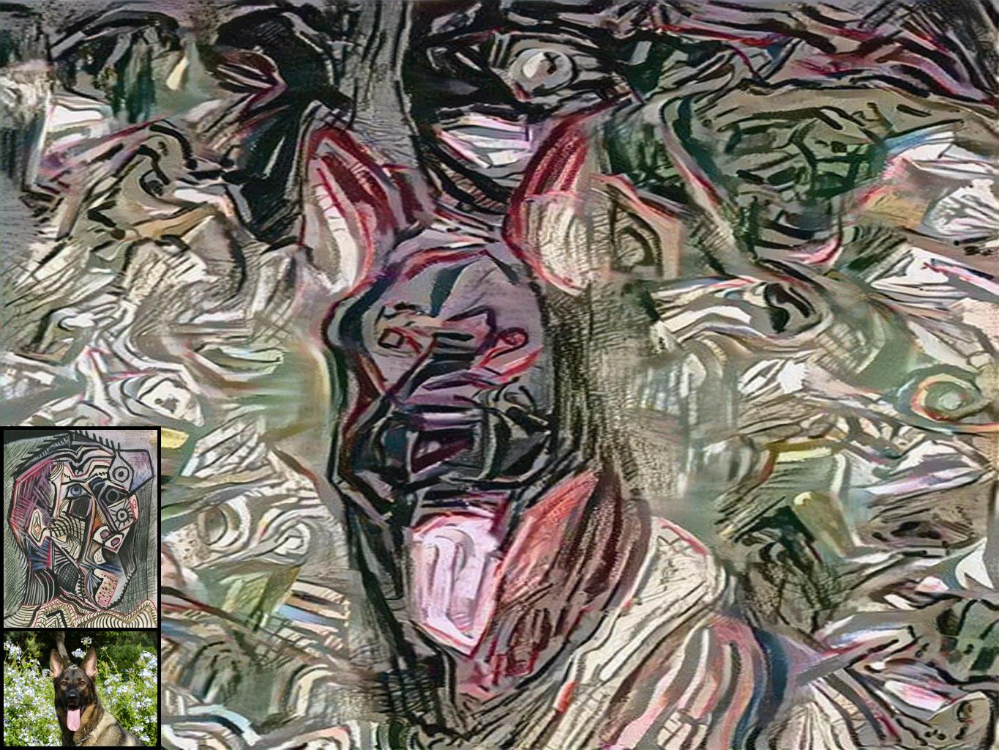
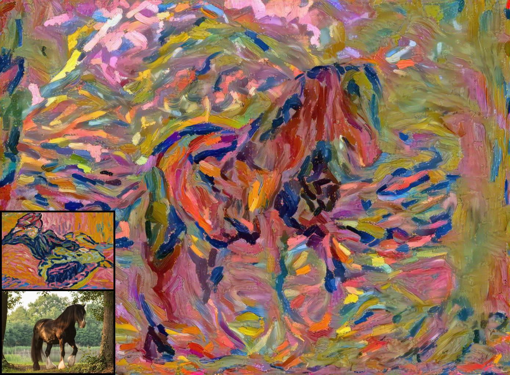
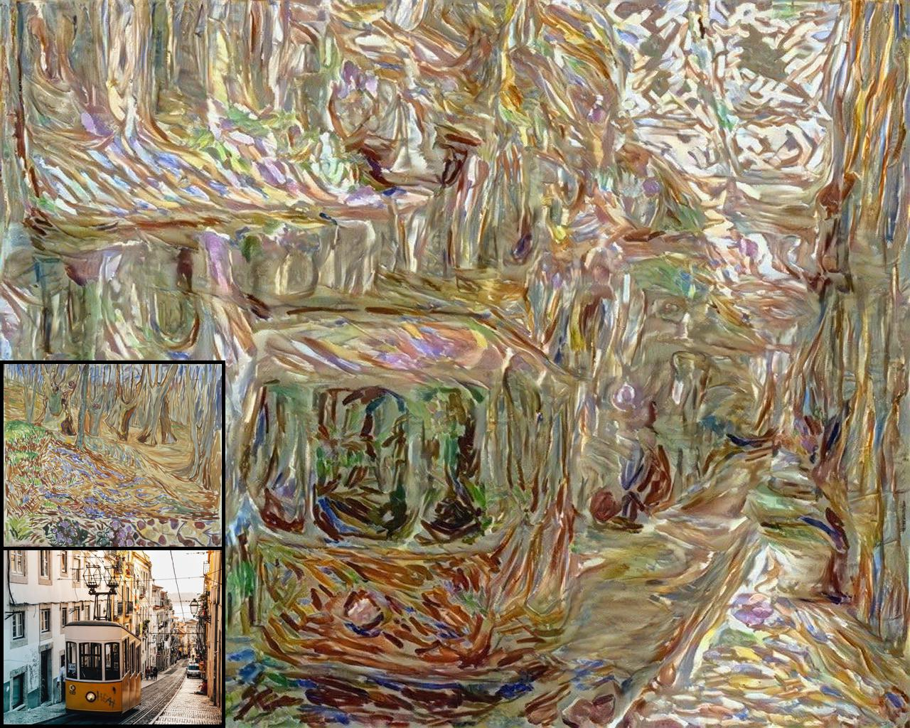
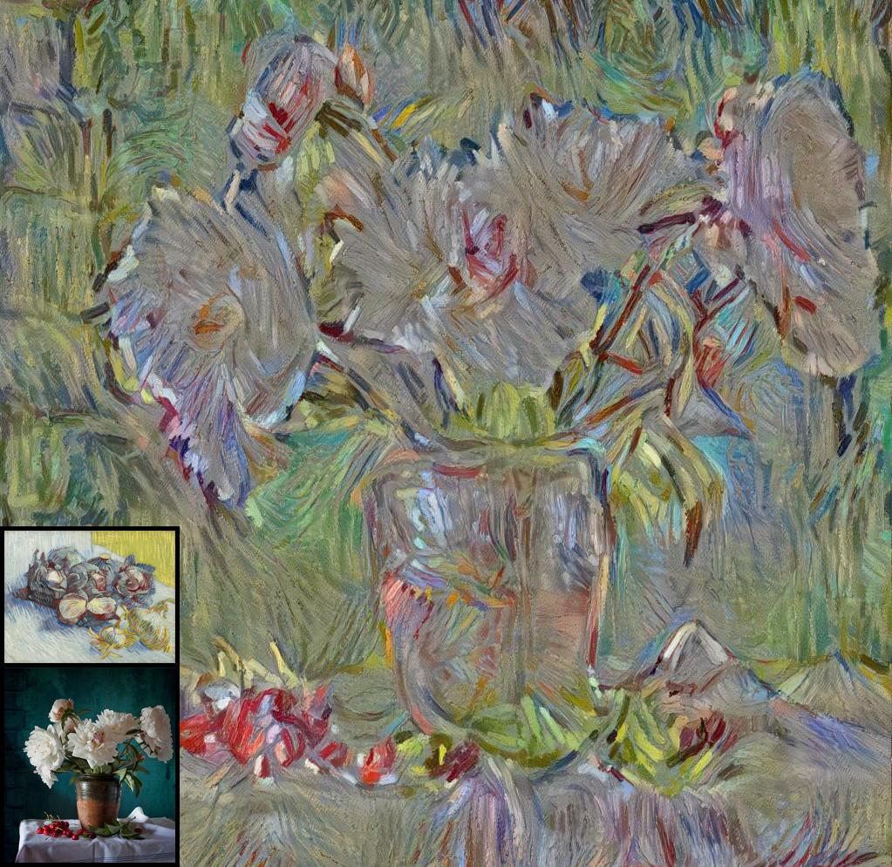
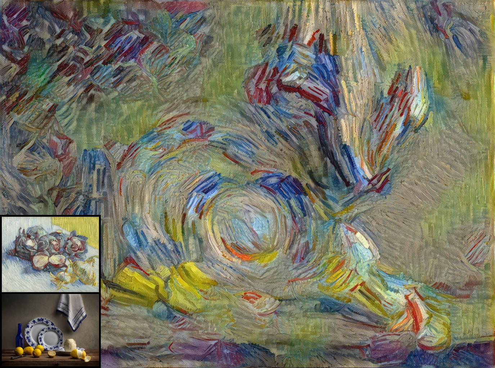
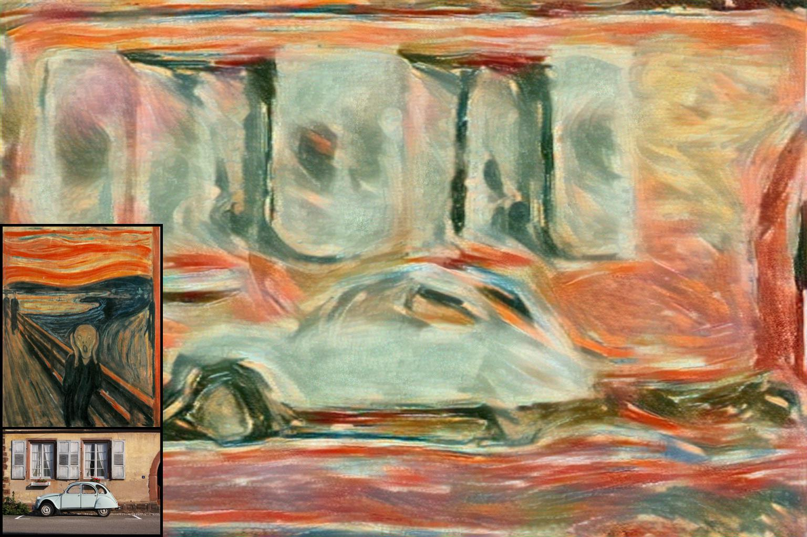
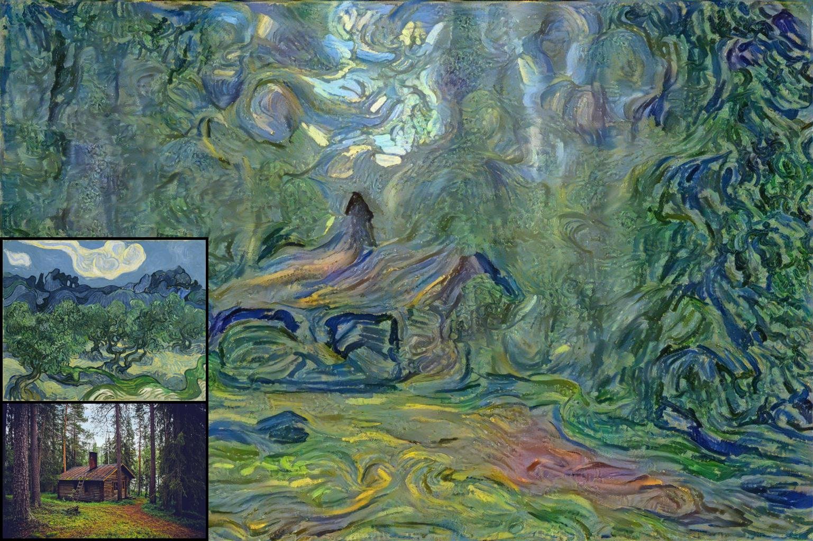

There have been many successful implementations of neural style transfer in recent years. In most of these works, the stylization process is confined to the pixel domain. However, we argue that this representation is unnatural because paintings usually consist of brushstrokes rather than pixels. We propose a method to stylize images by optimizing parameterized brushstrokes instead of pixels and further introduce a simple differentiable rendering mechanism. Our approach significantly improves visual quality and enables additional control over the stylization process such as controlling the flow of brushstrokes through user input. We provide qualitative and quantitative evaluations that show the efficacy of the proposed parameterized representation.
Overview

Results








Citation
@article{kotovenko_cvpr_2021,
title={Rethinking Style Transfer: From Pixels to Parameterized Brushstrokes},
author={Dmytro Kotovenko and Matthias Wright and Arthur Heimbrecht and Bj{\"o}rn Ommer},
journal={CVPR},
year={2021}
}